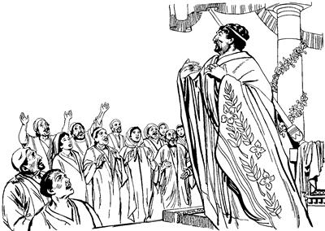

Herodesti Yesusti yubu ka'erop nimi olamsiogha (12:1-5)
12
1 Kwaneng yo nubunge waelbaog li enekoag Roma nimi saelbamsiogne Kaisar Klaudius umag Yahudi nimi sembe yubu sia leropne nhon babe sina Herodes wamog. Yubu sia leropne Herodes nenekori “Yesusag ‘Sikne’ aro seneragtop nimi seklebaukang,” aro ilipsabo yin saleropnang pogsiro “Haing sae kaupto poa yalamsululom,” aro ambarelamsiogpa, elag poa yalamsiek. 2 Nimi elag poa yalamsiekne anabiag agha nimi nhon sina Yakobus, Yohanes eldo wamog. Herodesti el umag nimiag, “Yakobus neneko karoghag agha karepto oplulom,” aro arukahiogpa, ya'ag obek. 3-4 Obeka sembe Yahudi nimiri “Wali,” aro awi senelamekpa, Herodesti ipsiogti, “Petrus babe saelbalulom,” aro arukahiog. Herodes ilipsabori Petrus saelbaek sumenena, Yahudi nimiri kwaneng roti walerop komne tero ik etpare Allah omekto wameka,a ik nhon sum eneko Petrus sae kaupto saelbaek. Petrus saelbaekti, kop aeag tolongolamekpa, Herodesti el umag yin saleropnang ao tara bare nangag ambarelamsiogti, “A'un ina siram sunuro nimi tombare-tombare yae wamlulom,” aro ambatsiog.Wene aro ambatsiogti, “Allah omekto kwaneng roti walerop komne terop li liogha Petrus tam ane nimi maikno whingag karebanun,” aro Petrus kop aeag tobongkibog.
5 Petrus neneko kop aeag aneko wamogpa, Yesusag “Sikne” aro seneragtop nimi tanekori sol wali, wali uro, “Petrus yeplulam,” aro Allahag molona mololamek.
Allahri Petrus kop aeag agha lambirogha (12:6-19)
6 Herodesti, “Ambuhum nimi maikno wamika haingag agha tam karebaukap,” aro wamogpa, Petrus neneko sae tara-tara yin salerop nangdi saeap a'amsuro kaubirekpa, Petrus malamog. Sindi sae a'amsuro kaubirek haing aneko besi agha sorop haingag agha kaubirek. Petrus malamog ae lom ina siramag yin salerop nang nenne babe yae wamek. 7 Yae wamekti, wamekpa, Nuni Allahri Eldamneri arukna imagne malaikat poghogne neneko Petrus malamoghag wa'iogpa, Petrus wamog ae lom eneko warelobog. Allah arukna malaikat anekori Petrus malamogha kaombaogti, “Nangkae, elemag puke,” alamog abeneko besi agha sorop haing sae kaubamek haing eneko loptangka timbaog. 8 Loptangka timbaogpa, Allah arukna malaikat anekori Petrusag yubu lelamogti, “Anenge uoghag nopna noptoba nopto amendi, yan wangana wangaro alulam,” seogpa wangkaog. Wangkaogpa nen lelamogti, “Ag nongagne enekto amendi, nanag sarenelebanululam,” seog.
9 Wene seogpa, Petrus kop aeag anekoa lanaro Allah arukna malaikat nelepto lanalamogti, Petrustina, “Ot sik uro Allah arukna malaikati lobolanel,” semban koma, “Lenda malamna to,” senero Allah arukna malaikat nelepto lambaog. 10 Allah arukna malaikat nelepto palamogti, yin salerop nang ina siram tenap lomag tao weamekne phibom agha, nen tenap phendepne yae wamekne phioro asag lambanebag besiri soro lingni loropneag palamdekpa, ina siram aneko mo kuptaog. Mo kuptaogpa, lanaro palamdekti, ina ingkisag anekoa palamdekti, Allah arukna malaikat anekori Petrus laploa piog. 11 Ina ingkisag aneko pirekti, Allah arukna malaikat anekori Petrus laploa piogpa, wana hegkaogti, “Yahudi nimiri na ‘Obukap,’ sembamangdi wamang, aghana Allahri eldi arukna malaikat arukalba, Herodes saeag agha Nani Allahri taulbanelba, wene sik uro el tanel,” seog.
12 Undo wene seogti, seneraglamogti, Yohanes si nhon Markus ilin Mariari aeag piog. Ae neneko nimi maikno poloro tekne amekti, Petrus sembe Allahag molona mololamek. 13 Ae enekoag piogti, leka toroba ina siramag kaungkaogpa, “Etneri kaungulamla,” aro Maria arukna kelabo sina Rode nenekori kemel aog. 14 Kemel aogti Petrus yubu lelamogha ka'ebaogti, awi lelem ina kupna koma, “Nimi ambatsunun,” aro ae lomag piogti, “Petrus asag wamla,” aro nimi longoro tekne amekne ambatsiog.
15 Ambatsiogpa sindina, “Anna serem saelbamlamdi, lelamlam,” aro wene alamekpa, eldina, “Ot sik,” seogpa sindina, “Allah arukna malaikatti Petrus piamlangeb yalba lelamla,” alamek. 16 Yubu undo lelamekpa, Petrusti ina kaungu-kaungu palamogha sembe ina kupto kemelamekpa, Petrus ina siramag wamogha ibekti, “Logti, mane agha yal,” sembaek. 17 “Logti, mane agha yal,” sembaekpa, Petrusti, “Yubu kom talulom,” aro sae maubitsiogti, “Nuni Allahri eldi arukna malaikat poglaba, kop aeag agha enero poa lambitnelba yan,” aro ambatsiog. “Ambatsinne nene Yakobusapc, nungkabo Yesusag ‘Sikne’ aro seneraglamang nimi yogneap ambatsululom,” seogti, lamba as oraag piog.
18 Lukunap yin salerop nang Petrus yae ulamekne tanekori, “Petrusag sa'a agha ualba, welaro lambal?” aro logti, sin mamun maikno haum aro lelamek. 19 Yin saleropnang taneko logti, sin mamun maikno haum aro lelamekti, wamekpa, Herodes nenekori, “Petrus ebalulom,” seogpa, sen-senna ebaek. Ebaekpa, orogti, Herodesti, “Yin salerop nang Petrus yae wamek nang payahilulom,” seogpa, payahiekpa, Herodesti hailamsiog. Hailamsiogti, “ ‘Sindi saeag agha lambal,’ aro opsululom,” seogpa, yin saleropnang orangeri, “Opsukap,” aro pabahiek.
Undo Herodesti saeag agha Petrus Allahri lambirogpa, Herodes neneko mog so'o Yudea laplobi agha as Kaisarea piogti, wamog.
Herodes Tebaogha (12:20-25)
20 Herodesap mog so'o Tirus nimiap mog so'o Sidon nimiap sin iriktangto saog uro wamekti, Herodesti sin sembe yo senelamog. Yo senelamog aghana Herodesti mog so'oag agha sindi tisirik wamogpa, Tirus nimiap Sidon nimiap ma'aptaekti, “ ‘Nimi nubunge Herodesap nunap tam wamlul kom,’ aro elag yubu lel pukap,” aro piek. Elag piekti, nimi nhon si Blastus, yubu sia leropne Herodesti yubu eptopne ae lomag o'olamsiogne ponekoag, “Herodesap nunap ma'aptaukap,” aro samenag yubu yangaro lebekpa, Blastus sinag sip taog. Blastus sinag sip taogti, Herodesag yubu tipto ambarogpa, 21 Herodesti, “Sinag yubu lemnun,” aro yubu pibog. “Yubu lebukap,” seog sumeneko yaogpa, nimi nubu nimiri enektop ag enekaogti, elel molel aroba towalengkaogti, nimi nubunang salehiropnang purobag pulingkiogti, sinag yubu lebog.

22 Yubu lelamogpa, ka'eamek nimi tanekori “Nunag wali sembahilul,” aro kibiang towalengelamekti, “Nimiri yubu lelamla kom, phia phalamapne imag wamlange nimi saog taldi, lelamla,” alamek.
Herodesti nimi nubu nimiri enektop ag enekaogti, el umag nimiag yubu lebog. (ACT 12.21)
23 Wene alamekpa, Nuni Allahri “Mog so'oag nimiri Na mo omekaneheng aghana, Herodes omeklamang. Omeklamangba, Herodesti, ‘Na omekaneheng kom. Allahag agha omekalulom,’ senep aghana, ‘Wali omeklamneang,’ sembaldi wamla,” aro Allahri Eldamneri arukna malaikat, “Herodes oplulam,” aro poghog. Poghogpa, Herodes obogpa, kolagti tero tebaog.
24 Herodes tebaogpa, yubu kom taog aghana, Allah yubu nubu taogpa, nimi maiknori, “Allah yubu wali,” aro ka'elamek.
25 Barnabasap Saulusapti as Antiokhia nimiri sae agha pabireka taneko tatsirekti, Yerusalem laplobi agha samoro yalamdekti, Yohanes si nhon Markus poneko enero poa yarek.